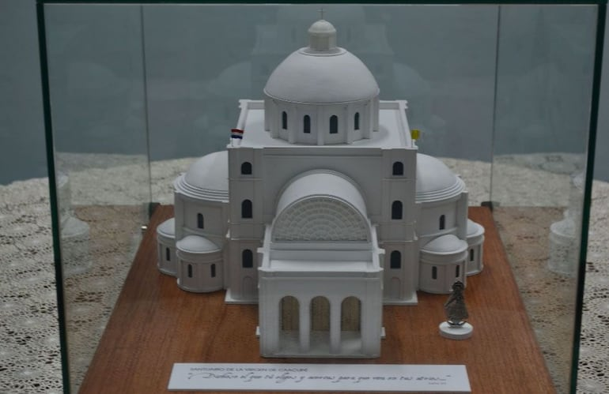

Legajo de obra
La documentación del proyecto para entender su forma y sus dimensiones.
La base del proyectoMás de 20 años convirtiendo
proyectos en experiencias tangibles.


Edificios, territorios, espacios y piezas singulares.
Cinco maneras de acercarnos a la arquitectura.
Años de experiencia
haciendo maquetas.
Somos A1 Maquetas. Desde Asunción, trabajamos en proyectos nacionales e internacionales, llevando cada idea al terreno de lo tangible.
Conocé A1La documentación del proyecto para entender su forma y sus dimensiones.
La base del proyectoLas vistas que ayudan a interpretar la propuesta y sus detalles.
La intención visualEl modelo digital para conocer los volúmenes y las relaciones espaciales.
La información en volumenConocé qué necesitamos para preparar
una cotización y empezar a conversar.